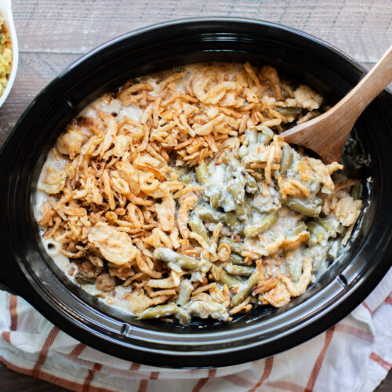

Slow Cooker Green Bean Casserole

Description
This is a recipe for a classic green bean casserole dish. The fried onions add great texture and contrast to the rich and creamy gravy covering the fresh green beans.
Prepping this in a slow cooker makes this recipe a breeze as you can set it earlier in the day then come home to a hot and ready meal.
Ingredients
- 2 (16 ounces) packages frozen cut green beans
- 2 (10.75 ounces) cans cream of chicken soup
- 2/3 cup of milk
- 1/2 cup grated parmesan cheese
- 1/4 tsp salt
- 1/4 tsp ground black pepper
- 1 (6 ounces) can french-fried onions, divied
Directions
- Combine green beans, cream of chicken soup, milk, parmesan, salt, black pepper, and half the can of French-friend onions in a slow cooker.
- Cover an cook on Low for 5 - 6 hours. Top casserole with remaining French-friend onions to serve.
Back Home